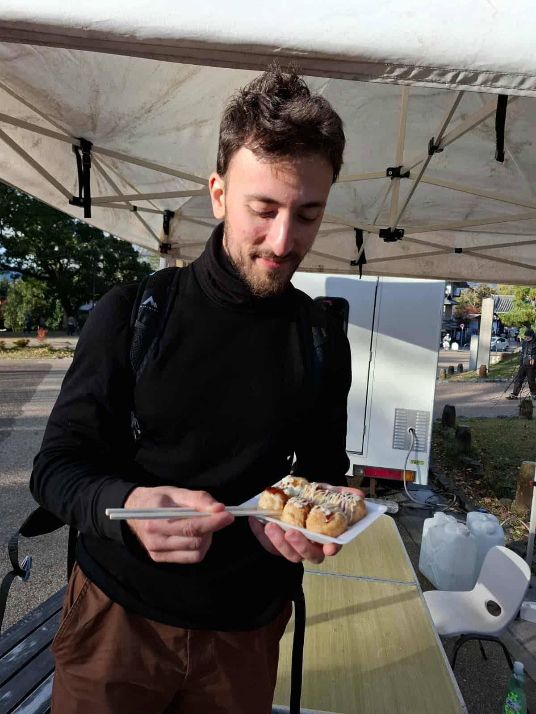

// researcher · engineer · builder
Joey Dufourd
Molecular biology · Bioinformatics · Data science
work in progress

Molecular biology · Bioinformatics · Data science
I'm a molecular biologist with computational expertise, passionate about understanding life through science. My PhD on telomere biology combined advanced molecular and imaging approaches (3D-SIM, proteomics) with custom computational pipelines in Python and R for image analysis, statistical modeling, computer vision and data integration.
Proficient in Bash, Python, and R, I develop reproducible analytical workflows to explore complex biological systems. I'm convinced that integrating wet-lab experimentation with computational approaches will accelerate discoveries and enable transformative advances in biomedical research.